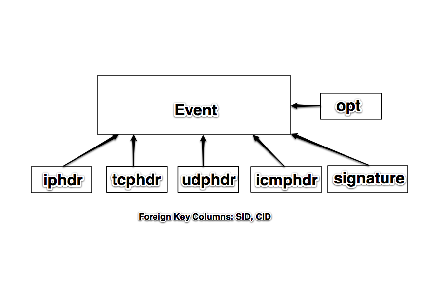
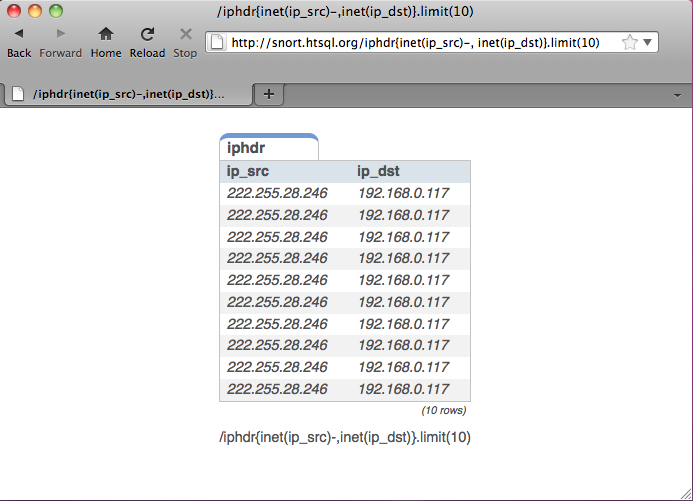
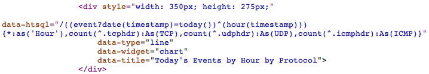

Rapid Report Generation for the System Administrator
Using the Snort database as an example, I will show
you how to use HTSQL as a tool to simplify generation
of reports and dashboards.
You can view the demo at http://htsql.org/gallery/snort/index.html
| Presenter: | Dan Ferris, Prometheus Research, LLC |
|---|
| Date: | May 13th, 2011 |
|---|
| Location: | BSDCan, Ottawa Ontario |
|---|
Introduction
- Getting data into databases is easy.
- Getting meaningful data out is hard.
- Reporting infrastructure can get very complex. My previous employer had 4 full time employees working on a unified reporting system for 2500 network devices. Every time we introduced a new device or service, reporting was at least 50% of development time.
What's so Special about Snort Anyway
- Snort is the most popular Open Source IDS.
- In most situations Snort is most useful when logging alerts to a database.
- The Snort database is complicated enough that writing an application is time consuming.
- The HTSQL principles shown will carry over to other apps that report to a database (jrtg, syslog-ng/rsyslog, FreeRadius, or custom applications).
The (Simplified) Snort DB Schema

What is HTSQL?
- In its most basic form, HTSQL is a web gateway to a relational database.
- HTSQL is a sophisticated query language.
- In a nutshell, HTSQL takes a specially formatted URL, translates it to SQL statements, and then returns formatted results from the database.
HTSQL Example
- An HTSQL query that returns the source and destination IPs from the last 10 events sorted by source:
- 
HTSQL Example
/iphdr{inet(ip_src)-, inet(ip_dst)}.limit(10)
Translated SQL:
SELECT ('0.0.0.0'::INET + "iphdr"."ip_src"),
('0.0.0.0'::INET + "iphdr"."ip_dst")
FROM "public"."iphdr" AS "iphdr"
ORDER BY 1 DESC, "iphdr"."sid" ASC, "iphdr"."cid" ASC
LIMIT 10
What can HTSQL do for you?
- HTSQL makes sharing data very easy. For example,
a business analyst can email an HTSQL query to a DBA
to show what data is needed for an application or report.
- HTSQL queries can be bookmarked, linked on a web page,
or shared via IM. Since the query is a URL, you can do
anything you would normally do with a URL.
- Less technical users can master the basics of HTSQL in a
few hours. As we say: "Write a user a query and they will
go away for a day. Teach them to query and they will go away."
- Quickly and easily create dashboards and mashups using HTRAF.
- At Prometheus, HTSQL powers our RexDB application. RexDB is used by many universities to access/store information about families with Autism.
The Nitty Gritty
- The most common useage of HTSQL is as a WSGI web service listening to an unprivileged TCP port. The service will respond to anything that can send an HTTP GET request.
- If you use Python, you can import HTSQL directly into your scripts.
- With Perl, you can use LWP.
- With the shell, you can use curl or wget.
The Nitty Gritty
Python using HTSQL directly:
from htsql import HTSQL
from htsql.request import produce
htsql = HTSQL('pgsql://user:pw@localhost:5432/snort')
with htsql:
for row in produce('/signature{sig_name}'):
print "Signature: " + row[0]
The Nitty Gritty
Bash with curl:
IFS=$'\n'
HTSQL='http://snort.htsql.org/signature\{sig_name\}/:csv'
for line in $(curl -s $HTSQL | tr '\r\n' '\n')
do
echo "Signature: $line"
done
The Nitty Gritty
Perl using LWP:
my $server = 'http://snort.htsql.org';
my $htsql = '/signature{sig_name}/:csv';
use LWP::Simple;
my $results = get $server . $htsql;
@results = split(/\r\n/, $results);
foreach $row (@results)
{
print "Signature: $row\n";
}
The Nitty Gritty
Partial Output:
Signature: PSNG_UDP_PORTSCAN
Signature: (http_inspect) NON-RFC DEFINED CHAR
Signature: (http_inspect) U ENCODING
Signature: (http_inspect) OVERSIZE REQUEST-URI DIRECTORY
Signature: PSNG_UDP_DISTRIBUTED_PORTSCAN
Insta-Blacklist Example
$server='http://snort.htsql.org';
$htsql='/distinct(event{inet(iphdr.ip_src)}
?signature.sig_priority=1)/:csv';
use LWP::Simple;
$result = get $server . $htsql;
@result = split(/\r\n/, $result);
shift(@result); #get rid of the column names
foreach $ip (@result)
{
print "Blocking $ip\n";
system("ipfw add deny all from $ip to any");
}
Brief HTSQL tutorial
- The easiest HTSQL query is to get the contents of a table:
Display the iphdr table from the snort DB:
/iphdr
Brief HTSQL tutorial
- It's much better if you can only select certain columns in the table.
This is done with the squiggly brackets { and }
/iphdr{ip_src, ip_dst}
- Note that Snort stores IP addresses as a 32 bit signed interger. HTSQL
can convert that to the familiar dotted quad notation with the inet()
function.
/iphdr{inet(ip_src), inet(ip_dst)}
- Data can be sorted by adding a + or - after the column.
/iphdr{inet(ip_src)-, inet(ip_dst)}
Brief HTSQL tutorial
- HTSQL allows you to filter data. A filter goes at the end of the {} selector
and is seperated with the ?
/iphdr{inet(ip_dst)}?inet(ip_src)='216.243.150.122'
- Filter operators include, =, >, <, >=, <=, and ~
- Filters can be combined with AND ( & ) and OR ( | )
/tcphdr{tcp_dport}?tcp_dport='21'|tcp_dport='139'
- The ! operator is used for logical negation.
/tcphdr{tcp_dport}?tcp_dport!='21'
Brief HTSQL tutorial
- Databases aren't very useful if you can't join data from different tables
based on foreign key constraints. All you have to do is put tablename.column
in the {} selector or in your filter.
/event{signature.sig_name}?cid='1234'
- Multiple tables can be joined:
/tcphdr{tcp_sport, inet(event.iphdr.ip_src)}?cid='1234'
Brief HTSQL tutorial
- Besides the inet() function, HTSQL includes functions to count and to return distinct rows:
/count(iphdr?inet(ip_src)='10.90.90.91')
/distinct(iphdr{inet(ip_src)})
- You can also limit rows by placing .limit(x) after the selector.
/event.limit(10)
- You can pretty up your output by putting :as after a column selection
/iphdr{inet(ip_src) :as 'IP Source'}
Learning Curve
- HTSQL does have a learning curve.
- If you know your database well, the curve is small.
- If you don't know your database very well, the curve will be larger.
- It took me about 2 days to really begin to grasp HTSQL at an intermediate level. A few hours will get you going as a beginner.
- Help is available on the mailing list and IRC channel.
- htsql.org has documentation and examples.
Licensing and Database Support
- HTSQL is dual licensed.
- If you want to use it with a commercial database
you have to give us money.
- HTSQL is free for use on open source databases.
- HTSQL officially supports: PostgreSQL, MySQL, SQLITE,
Oracle, and Microsoft SQL Server.
Installation
- The latest version is always found on bitbucket.
- Also found in the FreeBSD ports tree, databases/py-htsql
Running HTSQL
- HTSQL Requires no root privileges.
- It can run directly as a WSGI server
/usr/local/bin/htsql-ctl server pgsql://user:pw@localhost:5432/snort
- The HTSQL shell is a CLI and is very useful for development.
/usr/local/bin/htsql-ctl shell pgsql://user:pw@localhost:5432/snort
HTSQL Security
- HTSQL inherits whatever permission you give to the role it uses
to log into the database.
- If you are running HTSQL as a WSGI app, you will need a proxy server
to add things like SSL, or authentication. Varnish or Apache's ProxyPass
are both solutions. We have our demos running behind Varnish.
- The most secure setup possible would be HTSQL accessed through a proxy running with a database role that doesn't allow INSERT, UPDATE, or DELETE and is only allowed to query specific database views.
Development Status
- HTSQL is mature and stable. Some features may still be missing that
are due to be added in within the next year.
- HTSQL doesn't support INSERT, UPDATE, or DELETE. SELECT only at the moment.
HTRAF
- HTRAF is the HTSQL Rapid Application Framework.
- HTRAF is a client side Javascript library that can run and format HTSQL
queries into pretty graphs and tables.
- HTRAF makes building dashboards with HTSQL extremely easy.
- HTRAF is released uder the MIT/GPL license.

HTRAF Development Status
- HTRAF is quite functional.
- HTRAF does one thing very well, which is formatting HTSQL queries.
Conclusion
- HTSQL is a mature, robust, and stable database query language.
- HTSQL is free for use with Open Source databases such as MySQL
and PostgreSQL.
- HTSQL and HTRAF can replace thousands of lines of code in lower level languages.